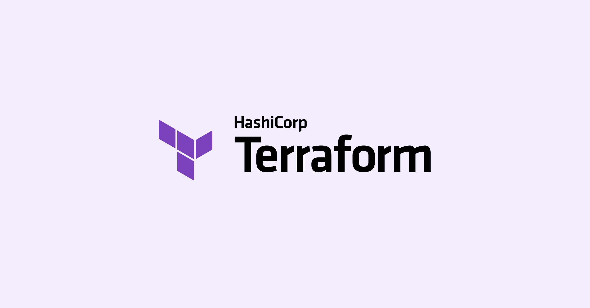

Terraform para infraestrutura reproduzível
Como organizar código de infraestrutura para reduzir riscos, ganhar previsibilidade e escalar mudanças com segurança.

Comece pelos módulos pequenos
Um erro comum em Terraform é criar um único arquivo enorme. Quando tudo está junto, qualquer alteração vira um risco. Dividir por módulos deixa seu projeto mais previsível e mais fácil de manter.
Uma estrutura simples costuma funcionar bem:
- módulo de rede: VNet, subnets, NSG
- módulo de computação: VMs, App Service, Functions
- módulo de dados: Storage, SQL, Key Vault
Padronize variáveis e nomes
Nomenclatura consistente evita confusão e facilita troubleshooting. Defina padrões para recursos, tags e variáveis de ambiente.
- Use prefixos por ambiente:
dev-,hml-,prd- - Centralize variáveis em arquivos
.tfvars - Documente entradas obrigatórias no README do módulo
Sempre valide antes do apply
Pipeline saudável de Terraform:
terraform fmtpara padronizar códigoterraform validatepara validar sintaxeterraform planpara revisar mudançasterraform applyapenas após aprovação
Use estado remoto e lock
Trabalhar com state local em time é receita para conflito. Prefira backend remoto (como Azure Storage) com lock para impedir execução concorrente.
Conclusão
Infraestrutura reproduzível não é só escrever código. É ter padrões claros, validação contínua e execução segura. Com Terraform bem organizado, o time entrega mais rápido e com menos incidentes.